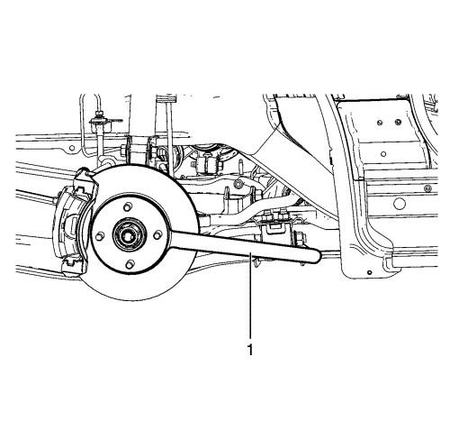
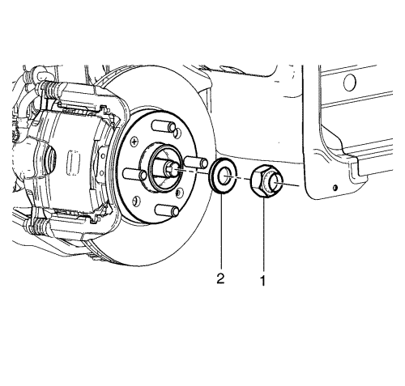
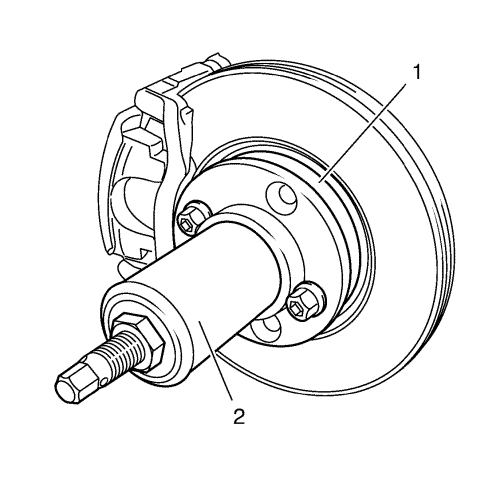
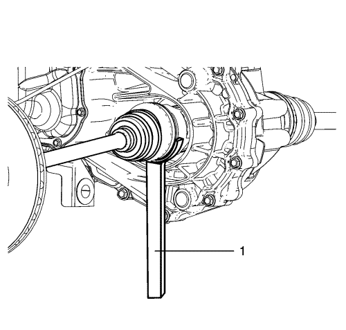
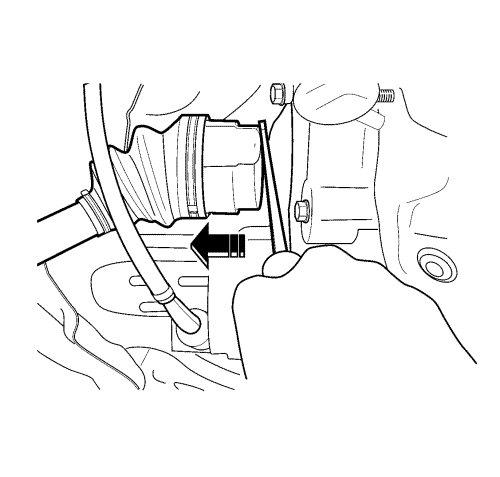
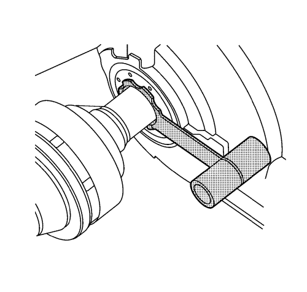

Sustitución del semieje de la rueda delantera
Herramientas especiales
| • | DT-6332 Protector de juntas |
| • | DT-50183 Herramienta de desmontaje del árbol de accionamiento de ruedas |
| • | DT-50186 Útil de sujeción del cubo de rueda |
| • | DT-50188 Extractor de husillo de cubo |
Procedimiento de desmontaje
- Elevar el vehículo y soportarlo de manera segura. Consultar Precaución al elevar el vehículo y utilizar un gato .
- Desmonte la rueda del vehículo. Consultar Desmontaje y montaje de la rueda y el neumático .
- Drene el aceite del cambio según sea necesario.

- Monte el útil de sujeción del cubo de rueda DT-50186 (1) en el cubo de rueda (2) con las tuercas de rueda (3).

Nota: Use una herramienta adecuada para soltar el enlace de la tuerca de sujeción del árbol de accionamiento de ruedas.
Nota: La tuerca de sujeción del árbol de accionamiento de ruedas (1) se debe desechar tras retirarla.
- Desmonte la tuerca del árbol de accionamiento de ruedas (1) y la arandela (2) del árbol de accionamiento de las ruedas y deséchela.
- Desmonte el útil de sujeción del cubo de rueda DT-50186 del cubo de rueda.
- Desconecte de la mangueta el conjunto de barra de dirección exterior. Consultar Sustitución la barra de acoplamiento exterior del varillaje de la dirección .
- Separar la rótula del brazo de control de la mangueta. Consultar Sustitución del brazo de apoyo inferior .

- Usando el extractor de husillo de cubo DT-50188 (2). separe el árbol de accionamiento de ruedas de la mangueta de dirección (1).

- Para la transmisión manual, monte el extractor del árbol de accionamiento de ruedas DT-50183 (1) en la ranura de la articulación interior y desmonte el árbol de accionamiento de ruedas del eje de la transmisión.

- Para la transmisión automática, inserte un destornillador grande de cabeza plana (1) entre la articulación interior y el eje de la transmisión y desmonte el árbol de accionamiento de ruedas del eje de la transmisión.
- Si se determina que la junta del árbol de accionamiento de ruedas está defectuosa, sustituya la junta. Consultar Sustitución del retén del semieje de la rueda delantera - lado izquierdo .
Procedimiento de montaje

- Coloque el protector de juntas DT-6332 en el eje de la transmisión.
- Monte el árbol de accionamiento de ruedas hasta que las estrías de éste hayan pasado de la junta del eje.
- Desmonte el protector de juntas DT-6332 del árbol de accionamiento de ruedas.
- Monte el árbol de accionamiento de ruedas hasta que esté completamente asentado en el eje de la transmisión.
Nota:: En el siguiente paso, NO tire del árbol de accionamiento de ruedas. Tire sólo de la articulación interior.
- Con el árbol de accionamiento de ruedas montado, agarre la carcasa del trípode interior y tire del trípode hacia fuera para asegurarse de que el árbol de accionamiento de ruedas está bien encajado. El árbol de accionamiento de ruedas permanecerá en su lugar si está correctamente instalado.
- Monte el árbol de accionamiento de ruedas en el cubo/cojinete de la rueda delantera.
- Monte la rótula del brazo de control en la mangueta de dirección. Consultar Sustitución del brazo de apoyo inferior .
- Monte en la mangueta el conjunto de barra de dirección exterior. Consultar Sustitución la barra de acoplamiento exterior del varillaje de la dirección .
- Apriete a mano la NUEVA tuerca del árbol de accionamiento de ruedas (2) en el árbol de accionamiento de ruedas (1).
- Monte el útil de sujeción del cubo de rueda DT-50186 (1) en el cubo de rueda (2) con dos tuercas de rueda (3).
- Apoye el borde exterior del útil de sujeción del cubo de rueda DT-50186 (1) en un soporte de seguridad.
- Utilizando una llave dinamométrica y una base del tamaño adecuado, monte la tuerca del árbol de accionamiento de ruedas y apriete a 240 N·m (177 lib. pie).
- Desmonte el útil de sujeción del cubo de rueda DT-50186 (1) del cubo de rueda (2).
- Monte el conjunto de neumático y llanta. Consultar Desmontaje y montaje de la rueda y el neumático .
- Bajar el vehículo.
- Llene el líquido del eje de la transmisión e inspeccione su nivel según sea necesario. Véase Sustitución del aceite del cambio o Sustitución del aceite del cambio .
| © Copyright Chevrolet Europe. All rights reserved |